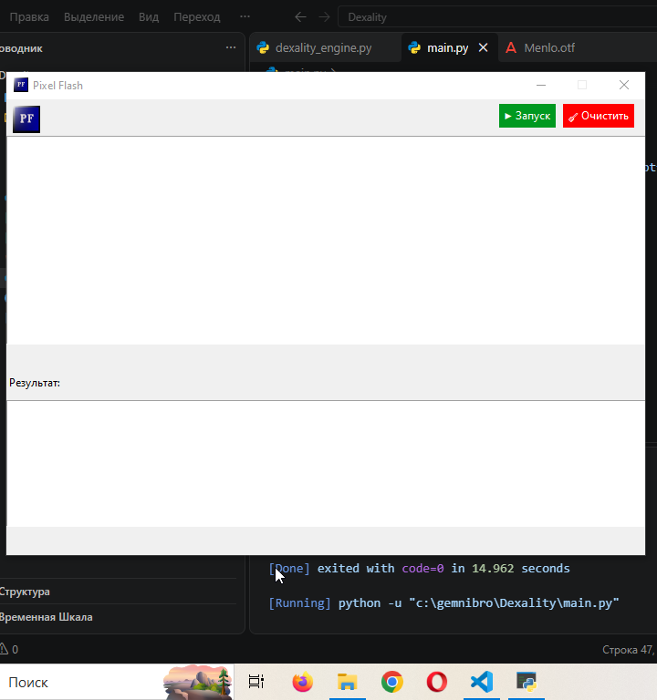
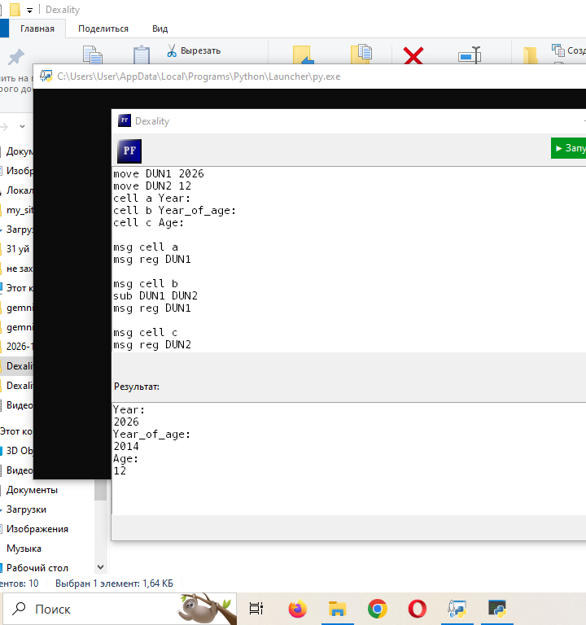

Предствляю Dexality Emulator
Что такое Dexality?:
Dexality - Это новый эмулятор написанный по архитектуре старого эмулятора Pixel-Flash. Новый эмулятор добавляет 10 функции из которых есть msg, cell, move и т. д. Вы можете делать на моем эмуляторе что угодно, взламывать, какать, бабахать и так далее. Он спецально написан для энтузиастов и любителей эмуляторов, кароче очень классная штука советую!!!
До:

После:

Почему он Dexality? Почему у него апгрейд и переименования?:
Dexality (дексалити) переминован так потому что старое имя Pixel-Flash было занятым популярной утилитой. Имя Dexality была не популярной и свободной и поэтому он так переминован. А насчет апргрейд текстуры это из-за того что эмулятор и файл эмулятора был франкштейном и содержал медленные команды. Я апгрейдил его и сделал рефакторинг, эмулятор стал чище и красивее. Каждый может легко менят код!